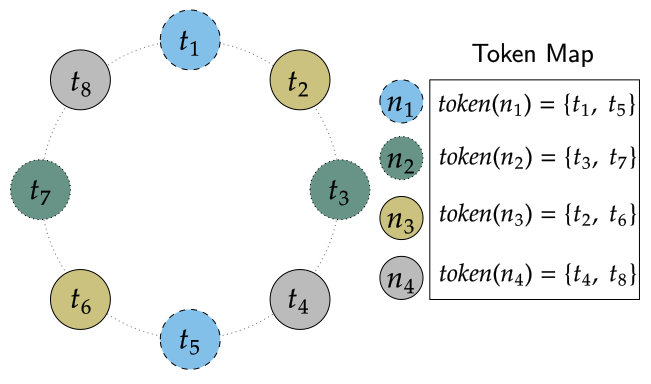

<div class="container-fluid">
  <div class="row">
    <div class="col-md-3">
      <div class="doc-navigation">
        <div class="doc-menu" role="navigation">
          <div class="navbar-header">
            <button type="button" class="pull-left navbar-toggle" data-toggle="collapse" data-target=".sidebar-navbar-collapse">
              <span class="sr-only">Toggle navigation</span>
              <span class="icon-bar"></span>
              <span class="icon-bar"></span>
              <span class="icon-bar"></span>
            </button>
          </div>
          <div class="navbar-collapse collapse sidebar-navbar-collapse">
            <form id="doc-search-form" class="navbar-form" action="../search.html" method="get" role="search">
              <div class="form-group">
                <input type="text" size="30" class="form-control input-sm" name="q" placeholder="Search docs">
                <input type="hidden" name="check_keywords" value="yes" />
                <input type="hidden" name="area" value="default" />
              </div>
            </form>
            
            
            
            <ul class="current">
<li class="toctree-l1"><a class="reference internal" href="../getting_started/index.html">Getting Started</a></li>
<li class="toctree-l1"><a class="reference internal" href="../new/index.html">New Features in Apache Cassandra 4.0</a></li>
<li class="toctree-l1 current"><a class="reference internal" href="index.html">Architecture</a><ul class="current">
<li class="toctree-l2"><a class="reference internal" href="overview.html">Overview</a></li>
<li class="toctree-l2 current"><a class="current reference internal" href="#">Dynamo</a><ul>
<li class="toctree-l3"><a class="reference internal" href="#dataset-partitioning-consistent-hashing">Dataset Partitioning: Consistent Hashing</a></li>
<li class="toctree-l3"><a class="reference internal" href="#multi-master-replication-versioned-data-and-tunable-consistency">Multi-master Replication: Versioned Data and Tunable Consistency</a></li>
<li class="toctree-l3"><a class="reference internal" href="#distributed-cluster-membership-and-failure-detection">Distributed Cluster Membership and Failure Detection</a></li>
<li class="toctree-l3"><a class="reference internal" href="#incremental-scale-out-on-commodity-hardware">Incremental Scale-out on Commodity Hardware</a></li>
</ul>
</li>
<li class="toctree-l2"><a class="reference internal" href="storage_engine.html">Storage Engine</a></li>
<li class="toctree-l2"><a class="reference internal" href="guarantees.html">Guarantees</a></li>
</ul>
</li>
<li class="toctree-l1"><a class="reference internal" href="../cql/index.html">The Cassandra Query Language (CQL)</a></li>
<li class="toctree-l1"><a class="reference internal" href="../data_modeling/index.html">Data Modeling</a></li>
<li class="toctree-l1"><a class="reference internal" href="../configuration/index.html">Configuring Cassandra</a></li>
<li class="toctree-l1"><a class="reference internal" href="../operating/index.html">Operating Cassandra</a></li>
<li class="toctree-l1"><a class="reference internal" href="../tools/index.html">Cassandra Tools</a></li>
<li class="toctree-l1"><a class="reference internal" href="../troubleshooting/index.html">Troubleshooting</a></li>
<li class="toctree-l1"><a class="reference internal" href="../development/index.html">Contributing to Cassandra</a></li>
<li class="toctree-l1"><a class="reference internal" href="../faq/index.html">Frequently Asked Questions</a></li>
<li class="toctree-l1"><a class="reference internal" href="../plugins/index.html">Third-Party Plugins</a></li>
<li class="toctree-l1"><a class="reference internal" href="../bugs.html">Reporting Bugs</a></li>
<li class="toctree-l1"><a class="reference internal" href="../contactus.html">Contact us</a></li>
</ul>

            
            
          </div><!--/.nav-collapse -->
        </div>
      </div>
    </div>
    <div class="col-md-8">
      <div class="content doc-content">
        <div class="content-container">
          
  <div class="section" id="dynamo">
<h1>Dynamo<a class="headerlink" href="#dynamo" title="Permalink to this headline">¶</a></h1>
<p>Apache Cassandra relies on a number of techniques from Amazon’s <a class="reference external" href="http://courses.cse.tamu.edu/caverlee/csce438/readings/dynamo-paper.pdf">Dynamo</a>
distributed storage key-value system. Each node in the Dynamo system has three
main components:</p>
<ul class="simple">
<li>Request coordination over a partitioned dataset</li>
<li>Ring membership and failure detection</li>
<li>A local persistence (storage) engine</li>
</ul>
<p>Cassandra primarily draws from the first two clustering components,
while using a storage engine based on a Log Structured Merge Tree
(<a class="reference external" href="http://citeseerx.ist.psu.edu/viewdoc/download?doi=10.1.1.44.2782&amp;rep=rep1&amp;type=pdf">LSM</a>).
In particular, Cassandra relies on Dynamo style:</p>
<ul class="simple">
<li>Dataset partitioning using consistent hashing</li>
<li>Multi-master replication using versioned data and tunable consistency</li>
<li>Distributed cluster membership and failure detection via a gossip protocol</li>
<li>Incremental scale-out on commodity hardware</li>
</ul>
<p>Cassandra was designed this way to meet large-scale (PiB+) business-critical
storage requirements. In particular, as applications demanded full global
replication of petabyte scale datasets along with always available low-latency
reads and writes, it became imperative to design a new kind of database model
as the relational database systems of the time struggled to meet the new
requirements of global scale applications.</p>
<div class="section" id="dataset-partitioning-consistent-hashing">
<h2>Dataset Partitioning: Consistent Hashing<a class="headerlink" href="#dataset-partitioning-consistent-hashing" title="Permalink to this headline">¶</a></h2>
<p>Cassandra achieves horizontal scalability by
<a class="reference external" href="https://en.wikipedia.org/wiki/Partition_(database)">partitioning</a>
all data stored in the system using a hash function. Each partition is replicated
to multiple physical nodes, often across failure domains such as racks and even
datacenters. As every replica can independently accept mutations to every key
that it owns, every key must be versioned. Unlike in the original Dynamo paper
where deterministic versions and vector clocks were used to reconcile concurrent
updates to a key, Cassandra uses a simpler last write wins model where every
mutation is timestamped (including deletes) and then the latest version of data
is the “winning” value. Formally speaking, Cassandra uses a Last-Write-Wins Element-Set
conflict-free replicated data type for each CQL row (a.k.a <a class="reference external" href="https://en.wikipedia.org/wiki/Conflict-free_replicated_data_type#LWW-Element-Set_(Last-Write-Wins-Element-Set)">LWW-Element-Set CRDT</a>)
to resolve conflicting mutations on replica sets.</p>
<blockquote>
<div></div></blockquote>
<div class="section" id="consistent-hashing-using-a-token-ring">
<span id="consistent-hashing-token-ring"></span><h3>Consistent Hashing using a Token Ring<a class="headerlink" href="#consistent-hashing-using-a-token-ring" title="Permalink to this headline">¶</a></h3>
<p>Cassandra partitions data over storage nodes using a special form of hashing
called <a class="reference external" href="https://en.wikipedia.org/wiki/Consistent_hashing">consistent hashing</a>.
In naive data hashing, you typically allocate keys to buckets by taking a hash
of the key modulo the number of buckets. For example, if you want to distribute
data to 100 nodes using naive hashing you might assign every node to a bucket
between 0 and 100, hash the input key modulo 100, and store the data on the
associated bucket. In this naive scheme, however, adding a single node might
invalidate almost all of the mappings.</p>
<p>Cassandra instead maps every node to one or more tokens on a continuous hash
ring, and defines ownership by hashing a key onto the ring and then “walking”
the ring in one direction, similar to the <a class="reference external" href="https://pdos.csail.mit.edu/papers/chord:sigcomm01/chord_sigcomm.pdf">Chord</a>
algorithm. The main difference of consistent hashing to naive data hashing is
that when the number of nodes (buckets) to hash into changes, consistent
hashing only has to move a small fraction of the keys.</p>
<p>For example, if we have an eight node cluster with evenly spaced tokens, and
a replication factor (RF) of 3, then to find the owning nodes for a key we
first hash that key to generate a token (which is just the hash of the key),
and then we “walk” the ring in a clockwise fashion until we encounter three
distinct nodes, at which point we have found all the replicas of that key.
This example of an eight node cluster with <cite>RF=3</cite> can be visualized as follows:</p>
<div class="figure">
<a class="reference internal image-reference" href="../_images/ring.svg"></a>
</div>
<p>You can see that in a Dynamo like system, ranges of keys, also known as <strong>token
ranges</strong>, map to the same physical set of nodes. In this example, all keys that
fall in the token range excluding token 1 and including token 2 (<cite>range(t1, t2]</cite>)
are stored on nodes 2, 3 and 4.</p>
</div>
<div class="section" id="multiple-tokens-per-physical-node-a-k-a-vnodes">
<h3>Multiple Tokens per Physical Node (a.k.a. <cite>vnodes</cite>)<a class="headerlink" href="#multiple-tokens-per-physical-node-a-k-a-vnodes" title="Permalink to this headline">¶</a></h3>
<p>Simple single token consistent hashing works well if you have many physical
nodes to spread data over, but with evenly spaced tokens and a small number of
physical nodes, incremental scaling (adding just a few nodes of capacity) is
difficult because there are no token selections for new nodes that can leave
the ring balanced. Cassandra seeks to avoid token imbalance because uneven
token ranges lead to uneven request load. For example, in the previous example
there is no way to add a ninth token without causing imbalance; instead we
would have to insert <code class="docutils literal notranslate"><span class="pre">8</span></code> tokens in the midpoints of the existing ranges.</p>
<p>The Dynamo paper advocates for the use of “virtual nodes” to solve this
imbalance problem. Virtual nodes solve the problem by assigning multiple
tokens in the token ring to each physical node. By allowing a single physical
node to take multiple positions in the ring, we can make small clusters look
larger and therefore even with a single physical node addition we can make it
look like we added many more nodes, effectively taking many smaller pieces of
data from more ring neighbors when we add even a single node.</p>
<p>Cassandra introduces some nomenclature to handle these concepts:</p>
<ul class="simple">
<li><strong>Token</strong>: A single position on the <cite>dynamo</cite> style hash ring.</li>
<li><strong>Endpoint</strong>: A single physical IP and port on the network.</li>
<li><strong>Host ID</strong>: A unique identifier for a single “physical” node, usually
present at one <cite>Endpoint</cite> and containing one or more <cite>Tokens</cite>.</li>
<li><strong>Virtual Node</strong> (or <strong>vnode</strong>): A <cite>Token</cite> on the hash ring owned by the same
physical node, one with the same <cite>Host ID</cite>.</li>
</ul>
<p>The mapping of <strong>Tokens</strong> to <strong>Endpoints</strong> gives rise to the <strong>Token Map</strong>
where Cassandra keeps track of what ring positions map to which physical
endpoints.  For example, in the following figure we can represent an eight node
cluster using only four physical nodes by assigning two tokens to every node:</p>
<div class="figure">
<a class="reference internal image-reference" href="../_images/vnodes.svg"></a>
</div>
<p>Multiple tokens per physical node provide the following benefits:</p>
<ol class="arabic simple">
<li>When a new node is added it accepts approximately equal amounts of data from
other nodes in the ring, resulting in equal distribution of data across the
cluster.</li>
<li>When a node is decommissioned, it loses data roughly equally to other members
of the ring, again keeping equal distribution of data across the cluster.</li>
<li>If a node becomes unavailable, query load (especially token aware query load),
is evenly distributed across many other nodes.</li>
</ol>
<p>Multiple tokens, however, can also have disadvantages:</p>
<ol class="arabic simple">
<li>Every token introduces up to <code class="docutils literal notranslate"><span class="pre">2</span> <span class="pre">*</span> <span class="pre">(RF</span> <span class="pre">-</span> <span class="pre">1)</span></code> additional neighbors on the
token ring, which means that there are more combinations of node failures
where we lose availability for a portion of the token ring. The more tokens
you have, <a class="reference external" href="https://jolynch.github.io/pdf/cassandra-availability-virtual.pdf">the higher the probability of an outage</a>.</li>
<li>Cluster-wide maintenance operations are often slowed. For example, as the
number of tokens per node is increased, the number of discrete repair
operations the cluster must do also increases.</li>
<li>Performance of operations that span token ranges could be affected.</li>
</ol>
<p>Note that in Cassandra <code class="docutils literal notranslate"><span class="pre">2.x</span></code>, the only token allocation algorithm available
was picking random tokens, which meant that to keep balance the default number
of tokens per node had to be quite high, at <code class="docutils literal notranslate"><span class="pre">256</span></code>. This had the effect of
coupling many physical endpoints together, increasing the risk of
unavailability. That is why in <code class="docutils literal notranslate"><span class="pre">3.x</span> <span class="pre">+</span></code> the new deterministic token allocator
was added which intelligently picks tokens such that the ring is optimally
balanced while requiring a much lower number of tokens per physical node.</p>
</div>
</div>
<div class="section" id="multi-master-replication-versioned-data-and-tunable-consistency">
<h2>Multi-master Replication: Versioned Data and Tunable Consistency<a class="headerlink" href="#multi-master-replication-versioned-data-and-tunable-consistency" title="Permalink to this headline">¶</a></h2>
<p>Cassandra replicates every partition of data to many nodes across the cluster
to maintain high availability and durability. When a mutation occurs, the
coordinator hashes the partition key to determine the token range the data
belongs to and then replicates the mutation to the replicas of that data
according to the <a class="reference internal" href="../cql/ddl.html#replication-strategy"><span class="std std-ref">Replication Strategy</span></a>.</p>
<p>All replication strategies have the notion of a <strong>replication factor</strong> (<code class="docutils literal notranslate"><span class="pre">RF</span></code>),
which indicates to Cassandra how many copies of the partition should exist.
For example with a <code class="docutils literal notranslate"><span class="pre">RF=3</span></code> keyspace, the data will be written to three
distinct <strong>replicas</strong>. Replicas are always chosen such that they are distinct
physical nodes which is achieved by skipping virtual nodes if needed.
Replication strategies may also choose to skip nodes present in the same failure
domain such as racks or datacenters so that Cassandra clusters can tolerate
failures of whole racks and even datacenters of nodes.</p>
<div class="section" id="replication-strategy">
<span id="id2"></span><h3>Replication Strategy<a class="headerlink" href="#replication-strategy" title="Permalink to this headline">¶</a></h3>
<p>Cassandra supports pluggable <strong>replication strategies</strong>, which determine which
physical nodes act as replicas for a given token range. Every keyspace of
data has its own replication strategy. All production deployments should use
the <a class="reference internal" href="#network-topology-strategy"><span class="std std-ref">NetworkTopologyStrategy</span></a> while the <a class="reference internal" href="#simple-strategy"><span class="std std-ref">SimpleStrategy</span></a> replication
strategy is useful only for testing clusters where you do not yet know the
datacenter layout of the cluster.</p>
<div class="section" id="networktopologystrategy">
<span id="network-topology-strategy"></span><h4><code class="docutils literal notranslate"><span class="pre">NetworkTopologyStrategy</span></code><a class="headerlink" href="#networktopologystrategy" title="Permalink to this headline">¶</a></h4>
<p><code class="docutils literal notranslate"><span class="pre">NetworkTopologyStrategy</span></code> allows a replication factor to be specified for each
datacenter in the cluster. Even if your cluster only uses a single datacenter,
<code class="docutils literal notranslate"><span class="pre">NetworkTopologyStrategy</span></code> should be preferred over <code class="docutils literal notranslate"><span class="pre">SimpleStrategy</span></code> to make it
easier to add new physical or virtual datacenters to the cluster later.</p>
<p>In addition to allowing the replication factor to be specified individually by
datacenter, <code class="docutils literal notranslate"><span class="pre">NetworkTopologyStrategy</span></code> also attempts to choose replicas within a
datacenter from different racks as specified by the <a class="reference internal" href="../operating/snitch.html#snitch"><span class="std std-ref">Snitch</span></a>. If
the number of racks is greater than or equal to the replication factor for the
datacenter, each replica is guaranteed to be chosen from a different rack.
Otherwise, each rack will hold at least one replica, but some racks may hold
more than one. Note that this rack-aware behavior has some potentially
<a class="reference external" href="https://issues.apache.org/jira/browse/CASSANDRA-3810">surprising implications</a>.  For example, if
there are not an even number of nodes in each rack, the data load on the
smallest rack may be much higher.  Similarly, if a single node is bootstrapped
into a brand new rack, it will be considered a replica for the entire ring.
For this reason, many operators choose to configure all nodes in a single
availability zone or similar failure domain as a single “rack”.</p>
</div>
<div class="section" id="simplestrategy">
<span id="simple-strategy"></span><h4><code class="docutils literal notranslate"><span class="pre">SimpleStrategy</span></code><a class="headerlink" href="#simplestrategy" title="Permalink to this headline">¶</a></h4>
<p><code class="docutils literal notranslate"><span class="pre">SimpleStrategy</span></code> allows a single integer <code class="docutils literal notranslate"><span class="pre">replication_factor</span></code> to be defined. This determines the number of nodes that
should contain a copy of each row.  For example, if <code class="docutils literal notranslate"><span class="pre">replication_factor</span></code> is 3, then three different nodes should store
a copy of each row.</p>
<p><code class="docutils literal notranslate"><span class="pre">SimpleStrategy</span></code> treats all nodes identically, ignoring any configured datacenters or racks.  To determine the replicas
for a token range, Cassandra iterates through the tokens in the ring, starting with the token range of interest.  For
each token, it checks whether the owning node has been added to the set of replicas, and if it has not, it is added to
the set.  This process continues until <code class="docutils literal notranslate"><span class="pre">replication_factor</span></code> distinct nodes have been added to the set of replicas.</p>
</div>
<div class="section" id="transient-replication">
<span id="id3"></span><h4>Transient Replication<a class="headerlink" href="#transient-replication" title="Permalink to this headline">¶</a></h4>
<p>Transient replication is an experimental feature in Cassandra 4.0 not present
in the original Dynamo paper. It allows you to configure a subset of replicas
to only replicate data that hasn’t been incrementally repaired. This allows you
to decouple data redundancy from availability. For instance, if you have a
keyspace replicated at rf 3, and alter it to rf 5 with 2 transient replicas,
you go from being able to tolerate one failed replica to being able to tolerate
two, without corresponding increase in storage usage. This is because 3 nodes
will replicate all the data for a given token range, and the other 2 will only
replicate data that hasn’t been incrementally repaired.</p>
<p>To use transient replication, you first need to enable it in
<code class="docutils literal notranslate"><span class="pre">cassandra.yaml</span></code>. Once enabled, both <code class="docutils literal notranslate"><span class="pre">SimpleStrategy</span></code> and
<code class="docutils literal notranslate"><span class="pre">NetworkTopologyStrategy</span></code> can be configured to transiently replicate data.
You configure it by specifying replication factor as
<code class="docutils literal notranslate"><span class="pre">&lt;total_replicas&gt;/&lt;transient_replicas</span></code> Both <code class="docutils literal notranslate"><span class="pre">SimpleStrategy</span></code> and
<code class="docutils literal notranslate"><span class="pre">NetworkTopologyStrategy</span></code> support configuring transient replication.</p>
<p>Transiently replicated keyspaces only support tables created with read_repair
set to <code class="docutils literal notranslate"><span class="pre">NONE</span></code> and monotonic reads are not currently supported.  You also
can’t use <code class="docutils literal notranslate"><span class="pre">LWT</span></code>, logged batches, or counters in 4.0. You will possibly never be
able to use materialized views with transiently replicated keyspaces and
probably never be able to use secondary indices with them.</p>
<p>Transient replication is an experimental feature that may not be ready for
production use. The expected audience is experienced users of Cassandra
capable of fully validating a deployment of their particular application. That
means being able check that operations like reads, writes, decommission,
remove, rebuild, repair, and replace all work with your queries, data,
configuration, operational practices, and availability requirements.</p>
<p>It is anticipated that <code class="docutils literal notranslate"><span class="pre">4.next</span></code> will support monotonic reads with transient
replication as well as LWT, logged batches, and counters.</p>
</div>
</div>
<div class="section" id="data-versioning">
<h3>Data Versioning<a class="headerlink" href="#data-versioning" title="Permalink to this headline">¶</a></h3>
<p>Cassandra uses mutation timestamp versioning to guarantee eventual consistency of
data. Specifically all mutations that enter the system do so with a timestamp
provided either from a client clock or, absent a client provided timestamp,
from the coordinator node’s clock. Updates resolve according to the conflict
resolution rule of last write wins. Cassandra’s correctness does depend on
these clocks, so make sure a proper time synchronization process is running
such as NTP.</p>
<p>Cassandra applies separate mutation timestamps to every column of every row
within a CQL partition. Rows are guaranteed to be unique by primary key, and
each column in a row resolve concurrent mutations according to last-write-wins
conflict resolution. This means that updates to different primary keys within a
partition can actually resolve without conflict! Furthermore the CQL collection
types such as maps and sets use this same conflict free mechanism, meaning
that concurrent updates to maps and sets are guaranteed to resolve as well.</p>
<div class="section" id="replica-synchronization">
<h4>Replica Synchronization<a class="headerlink" href="#replica-synchronization" title="Permalink to this headline">¶</a></h4>
<p>As replicas in Cassandra can accept mutations independently, it is possible
for some replicas to have newer data than others. Cassandra has many best-effort
techniques to drive convergence of replicas including
<cite>Replica read repair &lt;read-repair&gt;</cite> in the read path and
<cite>Hinted handoff &lt;hints&gt;</cite> in the write path.</p>
<p>These techniques are only best-effort, however, and to guarantee eventual
consistency Cassandra implements <cite>anti-entropy repair &lt;repair&gt;</cite> where replicas
calculate hierarchical hash-trees over their datasets called <a class="reference external" href="https://en.wikipedia.org/wiki/Merkle_tree">Merkle Trees</a> that can then be compared across
replicas to identify mismatched data. Like the original Dynamo paper Cassandra
supports “full” repairs where replicas hash their entire dataset, create Merkle
trees, send them to each other and sync any ranges that don’t match.</p>
<p>Unlike the original Dynamo paper, Cassandra also implements sub-range repair
and incremental repair. Sub-range repair allows Cassandra to increase the
resolution of the hash trees (potentially down to the single partition level)
by creating a larger number of trees that span only a portion of the data
range.  Incremental repair allows Cassandra to only repair the partitions that
have changed since the last repair.</p>
</div>
</div>
<div class="section" id="tunable-consistency">
<h3>Tunable Consistency<a class="headerlink" href="#tunable-consistency" title="Permalink to this headline">¶</a></h3>
<p>Cassandra supports a per-operation tradeoff between consistency and
availability through <strong>Consistency Levels</strong>. Cassandra’s consistency levels
are a version of Dynamo’s <code class="docutils literal notranslate"><span class="pre">R</span> <span class="pre">+</span> <span class="pre">W</span> <span class="pre">&gt;</span> <span class="pre">N</span></code> consistency mechanism where operators
could configure the number of nodes that must participate in reads (<code class="docutils literal notranslate"><span class="pre">R</span></code>)
and writes (<code class="docutils literal notranslate"><span class="pre">W</span></code>) to be larger than the replication factor (<code class="docutils literal notranslate"><span class="pre">N</span></code>). In
Cassandra, you instead choose from a menu of common consistency levels which
allow the operator to pick <code class="docutils literal notranslate"><span class="pre">R</span></code> and <code class="docutils literal notranslate"><span class="pre">W</span></code> behavior without knowing the
replication factor. Generally writes will be visible to subsequent reads when
the read consistency level contains enough nodes to guarantee a quorum intersection
with the write consistency level.</p>
<p>The following consistency levels are available:</p>
<dl class="docutils">
<dt><code class="docutils literal notranslate"><span class="pre">ONE</span></code></dt>
<dd>Only a single replica must respond.</dd>
<dt><code class="docutils literal notranslate"><span class="pre">TWO</span></code></dt>
<dd>Two replicas must respond.</dd>
<dt><code class="docutils literal notranslate"><span class="pre">THREE</span></code></dt>
<dd>Three replicas must respond.</dd>
<dt><code class="docutils literal notranslate"><span class="pre">QUORUM</span></code></dt>
<dd>A majority (n/2 + 1) of the replicas must respond.</dd>
<dt><code class="docutils literal notranslate"><span class="pre">ALL</span></code></dt>
<dd>All of the replicas must respond.</dd>
<dt><code class="docutils literal notranslate"><span class="pre">LOCAL_QUORUM</span></code></dt>
<dd>A majority of the replicas in the local datacenter (whichever datacenter the coordinator is in) must respond.</dd>
<dt><code class="docutils literal notranslate"><span class="pre">EACH_QUORUM</span></code></dt>
<dd>A majority of the replicas in each datacenter must respond.</dd>
<dt><code class="docutils literal notranslate"><span class="pre">LOCAL_ONE</span></code></dt>
<dd>Only a single replica must respond.  In a multi-datacenter cluster, this also gaurantees that read requests are not
sent to replicas in a remote datacenter.</dd>
<dt><code class="docutils literal notranslate"><span class="pre">ANY</span></code></dt>
<dd>A single replica may respond, or the coordinator may store a hint. If a hint is stored, the coordinator will later
attempt to replay the hint and deliver the mutation to the replicas.  This consistency level is only accepted for
write operations.</dd>
</dl>
<p>Write operations <strong>are always sent to all replicas</strong>, regardless of consistency
level. The consistency level simply controls how many responses the coordinator
waits for before responding to the client.</p>
<p>For read operations, the coordinator generally only issues read commands to
enough replicas to satisfy the consistency level. The one exception to this is
when speculative retry may issue a redundant read request to an extra replica
if the original replicas have not responded within a specified time window.</p>
<div class="section" id="picking-consistency-levels">
<h4>Picking Consistency Levels<a class="headerlink" href="#picking-consistency-levels" title="Permalink to this headline">¶</a></h4>
<p>It is common to pick read and write consistency levels such that the replica
sets overlap, resulting in all acknowledged writes being visible to subsequent
reads. This is typically expressed in the same terms Dynamo does, in that <code class="docutils literal notranslate"><span class="pre">W</span> <span class="pre">+</span>
<span class="pre">R</span> <span class="pre">&gt;</span> <span class="pre">RF</span></code>, where <code class="docutils literal notranslate"><span class="pre">W</span></code> is the write consistency level, <code class="docutils literal notranslate"><span class="pre">R</span></code> is the read
consistency level, and <code class="docutils literal notranslate"><span class="pre">RF</span></code> is the replication factor.  For example, if <code class="docutils literal notranslate"><span class="pre">RF</span>
<span class="pre">=</span> <span class="pre">3</span></code>, a <code class="docutils literal notranslate"><span class="pre">QUORUM</span></code> request will require responses from at least <code class="docutils literal notranslate"><span class="pre">2/3</span></code>
replicas.  If <code class="docutils literal notranslate"><span class="pre">QUORUM</span></code> is used for both writes and reads, at least one of the
replicas is guaranteed to participate in <em>both</em> the write and the read request,
which in turn guarantees that the quorums will overlap and the write will be
visible to the read.</p>
<p>In a multi-datacenter environment, <code class="docutils literal notranslate"><span class="pre">LOCAL_QUORUM</span></code> can be used to provide a
weaker but still useful guarantee: reads are guaranteed to see the latest write
from within the same datacenter. This is often sufficient as clients homed to
a single datacenter will read their own writes.</p>
<p>If this type of strong consistency isn’t required, lower consistency levels
like <code class="docutils literal notranslate"><span class="pre">LOCAL_ONE</span></code> or <code class="docutils literal notranslate"><span class="pre">ONE</span></code> may be used to improve throughput, latency, and
availability. With replication spanning multiple datacenters, <code class="docutils literal notranslate"><span class="pre">LOCAL_ONE</span></code> is
typically less available than <code class="docutils literal notranslate"><span class="pre">ONE</span></code> but is faster as a rule. Indeed <code class="docutils literal notranslate"><span class="pre">ONE</span></code>
will succeed if a single replica is available in any datacenter.</p>
</div>
</div>
</div>
<div class="section" id="distributed-cluster-membership-and-failure-detection">
<h2>Distributed Cluster Membership and Failure Detection<a class="headerlink" href="#distributed-cluster-membership-and-failure-detection" title="Permalink to this headline">¶</a></h2>
<p>The replication protocols and dataset partitioning rely on knowing which nodes
are alive and dead in the cluster so that write and read operations can be
optimally routed. In Cassandra liveness information is shared in a distributed
fashion through a failure detection mechanism based on a gossip protocol.</p>
<div class="section" id="gossip">
<span id="id4"></span><h3>Gossip<a class="headerlink" href="#gossip" title="Permalink to this headline">¶</a></h3>
<p>Gossip is how Cassandra propagates basic cluster bootstrapping information such
as endpoint membership and internode network protocol versions. In Cassandra’s
gossip system, nodes exchange state information not only about themselves but
also about other nodes they know about. This information is versioned with a
vector clock of <code class="docutils literal notranslate"><span class="pre">(generation,</span> <span class="pre">version)</span></code> tuples, where the generation is a
monotonic timestamp and version is a logical clock the increments roughly every
second. These logical clocks allow Cassandra gossip to ignore old versions of
cluster state just by inspecting the logical clocks presented with gossip
messages.</p>
<p>Every node in the Cassandra cluster runs the gossip task independently and
periodically. Every second, every node in the cluster:</p>
<ol class="arabic simple">
<li>Updates the local node’s heartbeat state (the version) and constructs the
node’s local view of the cluster gossip endpoint state.</li>
<li>Picks a random other node in the cluster to exchange gossip endpoint state
with.</li>
<li>Probabilistically attempts to gossip with any unreachable nodes (if one exists)</li>
<li>Gossips with a seed node if that didn’t happen in step 2.</li>
</ol>
<p>When an operator first bootstraps a Cassandra cluster they designate certain
nodes as “seed” nodes. Any node can be a seed node and the only difference
between seed and non-seed nodes is seed nodes are allowed to bootstrap into the
ring without seeing any other seed nodes. Furthermore, once a cluster is
bootstrapped, seed nodes become “hotspots” for gossip due to step 4 above.</p>
<p>As non-seed nodes must be able to contact at least one seed node in order to
bootstrap into the cluster, it is common to include multiple seed nodes, often
one for each rack or datacenter. Seed nodes are often chosen using existing
off-the-shelf service discovery mechanisms.</p>
<div class="admonition note">
<p class="first admonition-title">Note</p>
<p class="last">Nodes do not have to agree on the seed nodes, and indeed once a cluster is
bootstrapped, newly launched nodes can be configured to use any existing
nodes as “seeds”. The only advantage to picking the same nodes as seeds
is it increases their usefullness as gossip hotspots.</p>
</div>
<p>Currently, gossip also propagates token metadata and schema <em>version</em>
information. This information forms the control plane for scheduling data
movements and schema pulls. For example, if a node sees a mismatch in schema
version in gossip state, it will schedule a schema sync task with the other
nodes. As token information propagates via gossip it is also the control plane
for teaching nodes which endpoints own what data.</p>
</div>
<div class="section" id="ring-membership-and-failure-detection">
<h3>Ring Membership and Failure Detection<a class="headerlink" href="#ring-membership-and-failure-detection" title="Permalink to this headline">¶</a></h3>
<p>Gossip forms the basis of ring membership, but the <strong>failure detector</strong>
ultimately makes decisions about if nodes are <code class="docutils literal notranslate"><span class="pre">UP</span></code> or <code class="docutils literal notranslate"><span class="pre">DOWN</span></code>. Every node in
Cassandra runs a variant of the <a class="reference external" href="https://www.computer.org/csdl/proceedings-article/srds/2004/22390066/12OmNvT2phv">Phi Accrual Failure Detector</a>,
in which every node is constantly making an independent decision of if their
peer nodes are available or not. This decision is primarily based on received
heartbeat state. For example, if a node does not see an increasing heartbeat
from a node for a certain amount of time, the failure detector “convicts” that
node, at which point Cassandra will stop routing reads to it (writes will
typically be written to hints). If/when the node starts heartbeating again,
Cassandra will try to reach out and connect, and if it can open communication
channels it will mark that node as available.</p>
<div class="admonition note">
<p class="first admonition-title">Note</p>
<p class="last">UP and DOWN state are local node decisions and are not propagated with
gossip. Heartbeat state is propagated with gossip, but nodes will not
consider each other as “UP” until they can successfully message each other
over an actual network channel.</p>
</div>
<p>Cassandra will never remove a node from gossip state without explicit
instruction from an operator via a decommission operation or a new node
bootstrapping with a <code class="docutils literal notranslate"><span class="pre">replace_address_first_boot</span></code> option. This choice is
intentional to allow Cassandra nodes to temporarily fail without causing data
to needlessly re-balance. This also helps to prevent simultaneous range
movements, where multiple replicas of a token range are moving at the same
time, which can violate monotonic consistency and can even cause data loss.</p>
</div>
</div>
<div class="section" id="incremental-scale-out-on-commodity-hardware">
<h2>Incremental Scale-out on Commodity Hardware<a class="headerlink" href="#incremental-scale-out-on-commodity-hardware" title="Permalink to this headline">¶</a></h2>
<p>Cassandra scales-out to meet the requirements of growth in data size and
request rates. Scaling-out means adding additional nodes to the ring, and
every additional node brings linear improvements in compute and storage. In
contrast, scaling-up implies adding more capacity to the existing database
nodes. Cassandra is also capable of scale-up, and in certain environments it
may be preferable depending on the deployment. Cassandra gives operators the
flexibility to chose either scale-out or scale-up.</p>
<p>One key aspect of Dynamo that Cassandra follows is to attempt to run on
commodity hardware, and many engineering choices are made under this
assumption. For example, Cassandra assumes nodes can fail at any time,
auto-tunes to make the best use of CPU and memory resources available and makes
heavy use of advanced compression and caching techniques to get the most
storage out of limited memory and storage capabilities.</p>
<div class="section" id="simple-query-model">
<h3>Simple Query Model<a class="headerlink" href="#simple-query-model" title="Permalink to this headline">¶</a></h3>
<p>Cassandra, like Dynamo, chooses not to provide cross-partition transactions
that are common in SQL Relational Database Management Systems (RDBMS). This
both gives the programmer a simpler read and write API, and allows Cassandra to
more easily scale horizontally since multi-partition transactions spanning
multiple nodes are notoriously difficult to implement and typically very
latent.</p>
<p>Instead, Cassanda chooses to offer fast, consistent, latency at any scale for
single partition operations, allowing retrieval of entire partitions or only
subsets of partitions based on primary key filters. Furthermore, Cassandra does
support single partition compare and swap functionality via the lightweight
transaction CQL API.</p>
</div>
<div class="section" id="simple-interface-for-storing-records">
<h3>Simple Interface for Storing Records<a class="headerlink" href="#simple-interface-for-storing-records" title="Permalink to this headline">¶</a></h3>
<p>Cassandra, in a slight departure from Dynamo, chooses a storage interface that
is more sophisticated then “simple key value” stores but significantly less
complex than SQL relational data models.  Cassandra presents a wide-column
store interface, where partitions of data contain multiple rows, each of which
contains a flexible set of individually typed columns. Every row is uniquely
identified by the partition key and one or more clustering keys, and every row
can have as many columns as needed.</p>
<p>This allows users to flexibly add new columns to existing datasets as new
requirements surface. Schema changes involve only metadata changes and run
fully concurrently with live workloads. Therefore, users can safely add columns
to existing Cassandra databases while remaining confident that query
performance will not degrade.</p>
</div>
</div>
</div>


          
          <div class="doc-prev-next-links" role="navigation" aria-label="footer navigation">
            
            <a href="storage_engine.html" class="btn btn-default pull-right " role="button" title="Storage Engine" accesskey="n">Next <span class="glyphicon glyphicon-circle-arrow-right" aria-hidden="true"></span></a>
            
            
            <a href="overview.html" class="btn btn-default" role="button" title="Overview" accesskey="p"><span class="glyphicon glyphicon-circle-arrow-left" aria-hidden="true"></span> Previous</a>
            
          </div>
          
        </div>
      </div>
    </div>
  </div>
</div>